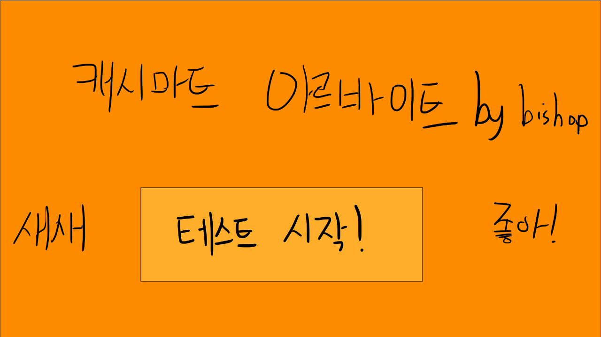
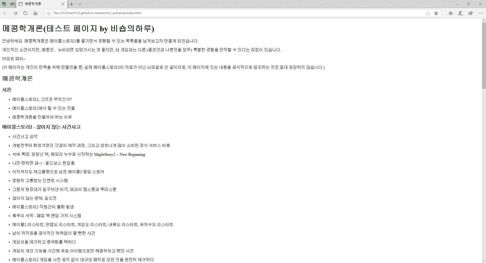
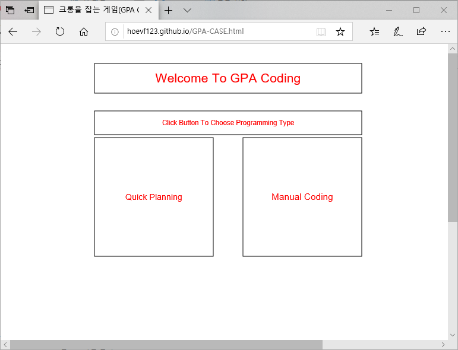
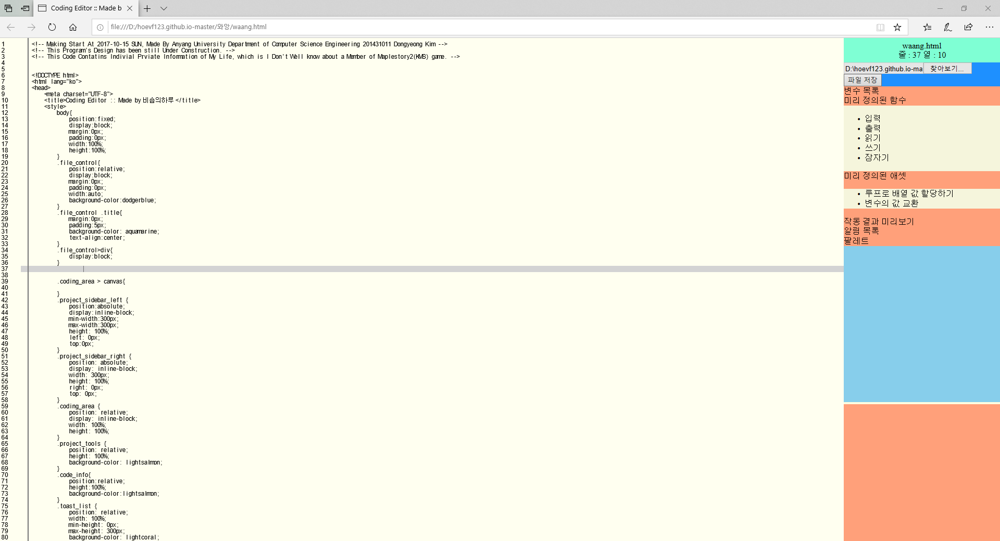
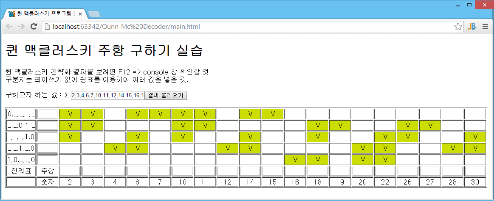

Dong's Git Page
메이플스토리2 - 하이 프리스트 "비숍의하루"
캐시마트 아르바이트 시뮬레이션(미구현)
사용 언어 :


메이플스토리2 게임 내 캐시마트 아르바이트 던전을 Javascript로 직접 만들어 보고 싶었습니다.
(※실행 시 데이터 소모 및 소리 주의!)
조작키 : [←↑→↓] : 방향키 , [S / 게임 내 "Summon Customer" 버튼] : 손님 랜덤 소환
캐시마트 아르바이트를 플레이를 한 후에 보면 좋은 공략!
메콩학개론
(※개인 사견으로 만든 단순 웹 페이지입니다※)
사용 언어 :
모든 게임에서 일어날 일을 겪은 메콩이 좋은 게임으로 발전하길 기대하며 만들어 본 사전식 페이지 입니다.
내가 누구인가
메이플스토리2 닉네임 : 비숍의하루(하이 프리스트, 스카니아 서버, 길드 없음)
※주의 : 메이플스토리의 모든 서버에서 "비숍의하루" 캐릭터 이름을 가지고 있지 않습니다※
무엇을 하는 사람인가
메이플스토리2 게임을 플레이하는 사람(라이트 유저)
캐시마트 아르바이트 고인물(달인은 아님)
가끔 심심하면 그림을 그리는 사람(그림 엄청 못 그림)
메이플스토리2의 추억을 저장해 두곤 하는 사람
Too Much Talker
신기한 기능과 더 나은 삶을 만드려고 시도하는 사람
비고
-
캐릭터 "비숍의하루"는 현재 사용하고 있는 계정에서 처음이자 마지막으로 생성된 캐릭터입니다.
(테스트 서버 제외, 2015.06.12 ~ 현재까지)
-
"비숍의하루"네 집에 방문하시면 높은 확률로 컴퓨터의 수명이 줄어들 수 있습니다.
(최고급 컴퓨터가 와도 초당 60프레임을 넘기기 힘들 겁니다. 집 입장하는 데 걸리는 시간 : 평균 3 ~ 10초)
(주 : Windows 10 Education x64 + 2666MHZ 16GB DDR4 SDRAM x2EA + i9-9900k(노오버, 터보부스트) + RTX 2080 = 18 ~ 65 fps)
-
틈만 나면 몸풀기로
핑크빈과돼지 퐁듀를 갖고 논다고 합니다.
Contact
-
메이플스토리2(KMS) - 개인 우편 ---> 비숍의하루
-
Discord ---> 비숍의하루 #5686
(Discord 메이플스토리2 대화방에 참여하시려는 분도 대화 가능합니다.)
-
카카오톡 개인 오픈채팅방 ---> 비숍의하루
-
E-Mail
hoevf123@naver.com
hoevf123.dongs@gmail.com
비숍이 실험실
게임 메이플스토리2와 관련된 잡다한 것들이 들어 있습니다.
사용 언어 :

기존에 작성되었던 것들 중 메2 길드와 관련이 없는 모든 내용을 이 페이지로 옮겼습니다.
메2 길드 홈페이지
※ 이 페이지는 메2 길드를 떠났기 때문에 더 이상 홈페이지를 운영하지 않습니다. ※
사용 언어 :

캐시마트 아르바이트 시뮬레이션(미구현)
사용 언어 :
메이플스토리2 게임 내 캐시마트 아르바이트 던전을 Javascript로 직접 만들어 보고 싶었습니다.
(※실행 시 데이터 소모 및 소리 주의!)
조작키 : [←↑→↓] : 방향키 , [S / 게임 내 "Summon Customer" 버튼] : 손님 랜덤 소환
캐시마트 아르바이트를 플레이를 한 후에 보면 좋은 공략!
메콩학개론
(※개인 사견으로 만든 웹 페이지입니다. 현재 내용 추가 및 유지보수 계획 없음※)
사용 언어 :
모든 게임에서 일어날 일을 겪은 메콩이 좋은 게임으로 발전하길 기대하며 만들어 본 사전식 페이지 입니다.
GPA-CASE(미구현)
사용 언어 :
터치 및 오브젝트 생성을 위한 테스트 웹 앱이였습니다만.. 개발실력에 맞지 않게 졸업주제로 정하면 안 되는 이유.
(이 프로그램은 말도 안되지만, 발표자료조차 만들지 않은 컴공 최종 졸업작품입니다)
와앙치키(텍스트 읽기만 가능))
※ 와앙치키 님은 메이플스토리2에 존재하는 유저의 이름입니다. ※
졸업작품으로 하려던 프로젝트 중 하나였으나, 개발 역량 부족으로 포커스 부분을 만들다 중단되었습니다.
(최종 졸업작품보다 퀄리티가 좋아보이는 건 기분탓)
퀸-맥클러스키 주항 구하기 프로그램
주 : 해당 프로그램은 주항 구하기 로직에 충실하게 구현하기 위해 알고리즘 최적화(방법이 있음을 제안받았지만)를 하지 않았습니다.
table 태그를 이용하여 주항을 구할 수 있는 표가 작동되도록 만들었습니다.
